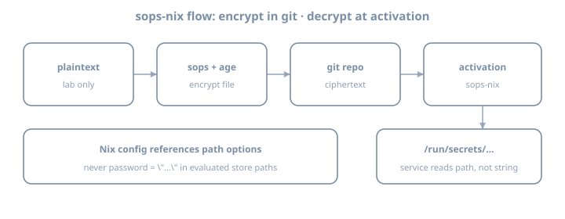

sops-nix
sops-nix
Goal: Wire sops-nix end-to-end: encrypt a secret in-repo, decrypt at activation, consume it from a NixOS service or timed script—without plaintext secrets in the Nix store evaluation graph.
House primary: sops-nix. The agenix chapter compares agenix; do not run both as permanent dual systems unless you have a reason.
Use placeholder values and lab-only credentials. Never paste production tokens into examples or commits.
Why this chapter exists
The secrets problem chapter established the threat model. This chapter installs the default tooling for this book:
| Property | sops-nix approach |
|---|---|
| At rest in git | Encrypted YAML/JSON/ENV (SOPS) |
| Encryption keys | Age and/or GPG; age recommended |
| On host | Decrypted at activation to a path like /run/secrets/... |
| Nix modules | Reference secret paths, not secret strings |

Theory 1 — Components
| Piece | Role |
|---|---|
| SOPS | Encrypts/decrypts structured files |
| age | Modern encryption tool; identities (private) + recipients (public) |
| sops-nix | NixOS/HM modules: decrypt during activation; systemd credentials patterns |
.sops.yaml |
Creation rules: which keys encrypt which files |
Flow
edit plaintext locally (editor via `sops file`)
→ encrypted file committed
→ nixos-rebuild
→ sops-nix activation decrypts with host/user age key
→ secret file on tmpfs/run with tight perms
→ service reads pathTheory 2 — Age keys (host-centric pattern)
Common NixOS pattern: host age key on the machine, public key in .sops.yaml creation rules.
Generate key (on the lab host; protect private key):
nix shell nixpkgs#age -c age-keygen -o "$HOME/.config/sops/age/keys.txt"
# private key file — NEVER commit
# public key printed as age1...For unattended host decryption, sops-nix docs describe placing keys where the activation can read them (often /var/lib/sops-nix/key.txt or configured path)—follow current sops-nix README for 26.05-compatible setup. Private key stays on host disk with root-only permissions—not in git.
Also encrypt to your admin age key so you can decrypt on a workstation for editing. Creation rules can list multiple recipients.
Key backup
Losing all private keys without other recipients = cannot decrypt. Keep admin recipient + offline backup of identities.
Theory 3 — Flake input
inputs = {
nixpkgs.url = "github:NixOS/nixpkgs/nixos-26.05";
sops-nix.url = "github:Mic92/sops-nix";
sops-nix.inputs.nixpkgs.follows = "nixpkgs";
};
# modules list includes:
# inputs.sops-nix.nixosModules.sops# flake.nix sketch
outputs = { self, nixpkgs, sops-nix, ... }@inputs: {
nixosConfigurations.lab = nixpkgs.lib.nixosSystem {
system = "x86_64-linux";
specialArgs = { inherit inputs; };
modules = [
./hosts/lab
sops-nix.nixosModules.sops
# or import modules/common/sops.nix that uses inputs
];
};
};Update only this input when bumping:
nix flake update sops-nixTheory 4 — Minimal NixOS sops config
# modules/common/sops.nix
{ config, ... }:
{
sops.defaultSopsFile = ../../secrets/lab.yaml;
# sops.age.keyFile = "/var/lib/sops-nix/key.txt"; # per upstream guidance
# sops.age.sshKeyPaths = [ ... ]; # alternative: derive from SSH host key
sops.secrets."lab/demo_token" = {
mode = "0400";
owner = "root";
# restartUnits = [ "some-service.service" ];
};
}Consume path:
systemd.services.sops-demo-check = {
wantedBy = [ "multi-user.target" ];
serviceConfig = {
Type = "oneshot";
RemainAfterExit = true;
ExecStart = "/bin/sh -c 'test -f /run/secrets/lab/demo_token && echo ok > /var/lib/sops-demo-ok'";
};
};Exact secret path layout depends on sops-nix version and naming—inspect after activation:
sudo ls -la /run/secretsNever do builtins.readFile config.sops.secrets."lab/demo_token".path into another world-readable derivation if that re-embeds content. Prefer systemd LoadCredential, EnvironmentFile pointing at the secret path, or scripts that read at runtime.
Theory 5 — Creating encrypted files
.sops.yaml example shape:
keys:
- &admin age1AAAAAAAAAAAAAAAAAAAAAAAAAAAAAAAAAAAAAAAAAAAAAAA
- &host age1BBBBBBBBBBBBBBBBBBBBBBBBBBBBBBBBBBBBBBBBBBBBBB
creation_rules:
- path_regex: secrets/.*\.yaml$
key_groups:
- age:
- *admin
- *hostEdit:
nix shell nixpkgs#sops nixpkgs#age -c sops secrets/lab.yamlExample structure before encryption (editor buffer only):
lab:
demo_token: PLACEHOLDER_LAB_TOKEN_ROTATE_MEAfter save, file on disk is encrypted ciphertext suitable for git.
Adding a secret later
sops secrets/lab.yaml- Add key under structured YAML
- Declare
sops.secrets."…"in Nix - Rebuild
- Point service at
.path
Theory 6 — HM secrets (awareness)
sops-nix also integrates with Home Manager for user secrets. Prefer system secrets for host services first; user secrets when a user-only app needs them.
Theory 7 — Bootstrapping chicken-and-egg
First host key setup is the awkward part:
- Generate age key on host
- Put public key in
.sops.yaml - Encrypt secrets to that recipient
- Place private key where sops-nix expects
- Rebuild
Document bootstrap in docs/secrets.md.
SSH host key method (awareness)
Some setups convert or use SSH host keys as age identities. Follow upstream docs if you choose that—document which method you used.
Theory 8 — systemd integration patterns
| Pattern | Use |
|---|---|
config.sops.secrets.*.path in ExecStart script |
Read file at runtime |
LoadCredential= |
systemd credentials API |
EnvironmentFile= |
If file is KEY=value format |
restartUnits |
Restart service when secret changes |
sops.secrets."lab/demo_token" = {
mode = "0400";
restartUnits = [ "lab-token-touch.service" ];
};Theory 9 — Multi-host recipients
creation_rules:
- path_regex: secrets/lab\.yaml$
key_groups:
- age: [*admin, *host_lab]
- path_regex: secrets/prod\.yaml$
key_groups:
- age: [*admin, *host_prod]Do not encrypt prod secrets only to a laptop key if the server must decrypt unattended.
Worked example — Secret for a custom script service
{ config, pkgs, ... }:
{
sops.secrets."lab/demo_token" = {
mode = "0400";
owner = "root";
};
systemd.services.lab-token-touch = {
description = "Demonstrate runtime read of sops secret path";
wantedBy = [ "multi-user.target" ];
serviceConfig = {
Type = "oneshot";
RemainAfterExit = true;
ExecStart = pkgs.writeShellScript "lab-token-touch" ''
set -euo pipefail
token_path="${config.sops.secrets."lab/demo_token".path}"
test -r "$token_path"
# Do NOT echo the token to logs
wc -c < "$token_path" > /var/lib/lab-token-bytes
'';
};
};
}Note: writeShellScript embeds the path string, not the secret content—good.
Exercises
Exercise 1 — Add input and module
# edit flake inputs; nix flake update sops-nix
# import sops-nix.nixosModules.sops
nix flake metadataExercise 2 — Age keys and .sops.yaml
- Generate admin age identity (laptop)
- Generate or configure host identity per sops-nix docs
- Write
.sops.yamlwith both public keys - Confirm private keys are gitignored
keys.txt
*.agekeyExercise 3 — First encrypted secret file
mkdir -p secrets
# create encrypted secrets/lab.yaml via sops
git add secrets/lab.yaml .sops.yaml
# ensure plaintext never stagedExercise 4 — Declare sops.secrets and rebuild
sudo nixos-rebuild switch --flake .#lab
sudo ls -la /run/secrets
sudo wc -c /run/secrets/... # do not cat into scrollback you paste publiclyExercise 5 — Runtime consumer
Add the oneshot that reads path without logging secret contents. Prove /var/lib/lab-token-bytes or similar.
Exercise 6 — Failure drill
- Break key access (rename key file temporarily)
- Rebuild or restart activation path
- Observe failure mode
- Restore key
Journal: how the host fails closed.
Exercise 7 — Docs
docs/secrets.md:
- Key locations
- How to add a secret
- How to add a recipient
- Rotation sketch
Exercise 8 — Selective lock update
nix flake update sops-nix
git diff flake.lock | head -80Exercise 9 — Permission check
sudo ls -la /run/secrets
# confirm mode 0400 (or intended) and ownerExercise 10 — Second secret
Add another key in the YAML; declare second sops.secrets entry; rebuild; list paths.
Exercise 11 — No readFile audit
rg -n 'builtins.readFile.*sops|sops\.secrets' .Ensure no anti-pattern re-embedding.
Exercise 12 — Journal hygiene
journalctl -u lab-token-touch.service -b --no-pager | tailConfirm secret values never appear.
Exercise 13 — Recipient add rehearsal (docs)
Write steps to add a second admin age public key without performing a risky prod op.
Exercise 14 — Bootstrap checklist in git
Commit docs/secrets.md with bootstrap steps a future you can follow on a blank host.
Common gotchas
| Symptom / mistake | What to do |
|---|---|
| Cannot decrypt on host | Host public key not in creation rules / wrong private key path |
| Cannot edit on laptop | Admin age key missing from recipients |
| Secret path empty | Activation order; sops config; check journal |
| Plaintext committed | Rotate; purge if needed; fix |
readFile secret into store |
Use runtime path only |
Logged secret via echo $TOKEN |
Never log secrets |
| GPG-only complexity | Prefer age for new labs |
| Private key in git | Rotate immediately; purge |
| Wrong defaultSopsFile path | Fix relative path from module file |
| Dual sops+agenix forever | Pick default after comparison chapter |
| follows missing on sops-nix | Align nixpkgs |
Checkpoint
- sops-nix input pinned with follows
.sops.yamlwith host + admin recipients- Encrypted secret file in git
- Private keys not in git
sops.secretsdeclared; appears under/run/secrets- Service/script consumes path only
- Bootstrap docs written
- Failure-closed drill done once
Journal (optional)
Write three personal gotchas before continuing.